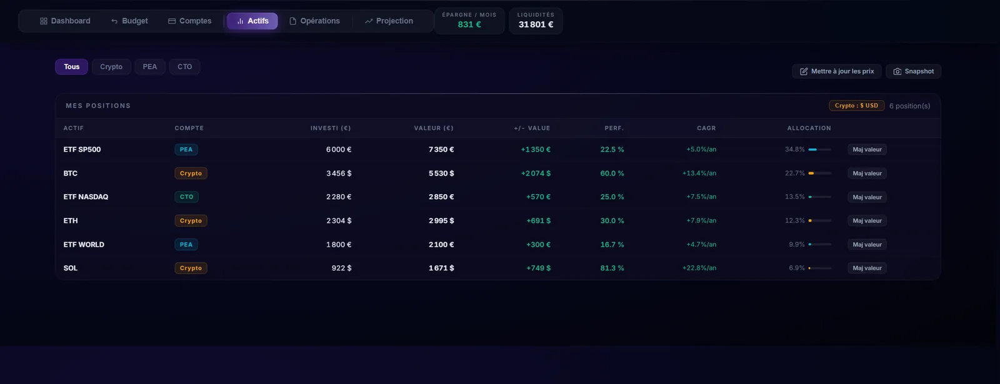
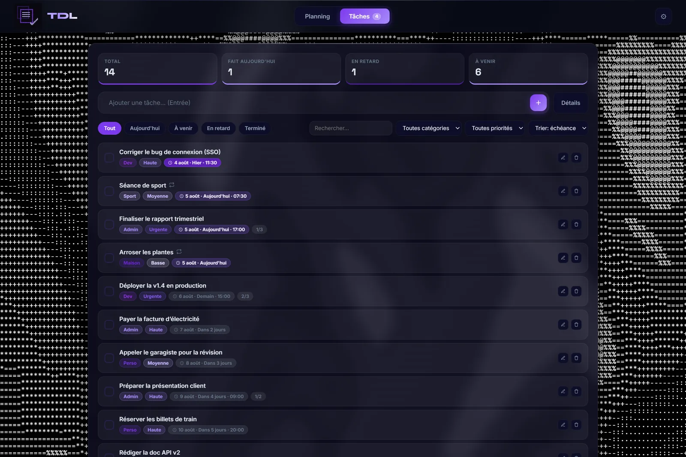
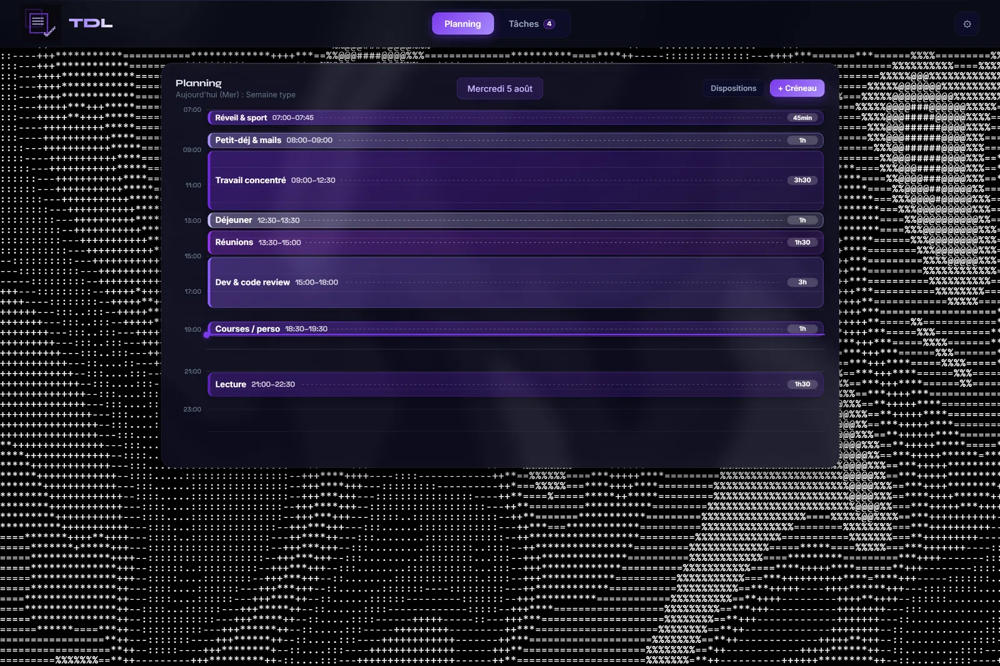

🛰️ Flagship — a hub of data apps
Orbit
A personal data hub: trading, budget, planning, market news & a live bot
A full local command-center built from scratch: a FastAPI launcher serving several HTML/CSS/JS dashboards inside one hub. Each app turns raw data into something readable — trades, money, tasks, markets — with charts, KPIs and projections everywhere. A Python bot wired to the Hyperliquid exchange places real orders (entry, stop-loss, take-profit), piloted from Telegram.
📈 Trading journal & analytics
💰 Budget, assets & wealth projection
✅ To-do & daily planning
🎯 Polymarket capital tracker
📰 Crypto-news watch
🤖 Hyperliquid bot (Telegram)
- Crypto-news watch with a local LLM: aggregates RSS from CoinDesk, Cointelegraph, The Block & Decrypt, then summarises any article in French with a model running on my own GPU (Ollama · qwen2.5) — main-text extraction with
trafilatura, per-article cache, anti-SSRF checks, 100% on-device (no data leaves the machine). - Data everywhere: equity curves, P&L distributions, wealth projection to retirement, financial-health scoring — all computed live from stored data.
- Security: token-based API auth, HTTP headers (CSP, X-Frame-Options), secrets kept out of Git.
- Refactored a 9,000-line monolith into clean HTML/CSS/JS — down to ~1,750 lines, zero regressions; fixed a periodic canvas-animation freeze.
6 apps
In one hub
Local LLM
On-device AI
9k→1.75k
Lines refactored
Real
Orders placed
PythonFastAPIJavaScript
Data vizWebSocketSQLite
Ollama · local LLMRSS / XML
Hyperliquid APITelegram BotSecurity
Private repository






Real screenshots of Orbit — click any to enlarge.